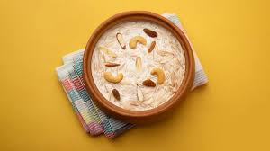

Payasam
Price: 65 /-
Description: Payasam is a traditional South Indian dessert, similar to a pudding, made with a base of milk or coconut milk, sweeteners like jaggery or sugar, and a variety of ingredients such as rice, vermicelli, lentils, or millets. It is flavored with cardamom, saffron, and sometimes rose water, and enriched with ghee-fried cashews, raisins, and grated coconut. Payasam is a staple offering during festivals, religious ceremonies, and celebratory occasions, symbolizing prosperity and sweetness. The dish varies regionally, with popular versions including semia payasam (vermicelli), paal payasam (milk and rice), and parippu payasam (moong dal). Its creamy texture and aromatic flavors make it a cherished dessert across India.
Order Now